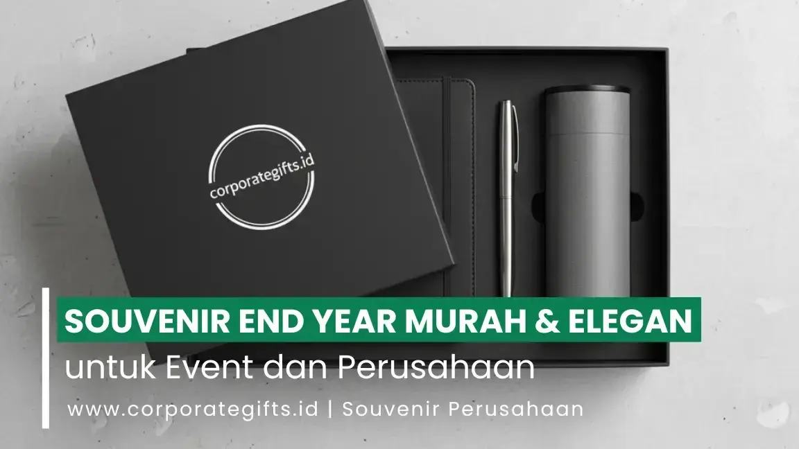

Corporate Gifts ID - Souvenir end year murah tetapi tetap elegan dapat diwujudkan dengan memilih produk fungsional seperti tumbler stainless, tote bag kanvas tebal, notebook spiral custom, atau lilin aromaterapi mini, lalu memadukannya dengan desain grafis yang selaras dengan identitas merek, kemasan hardbox atau pouch yang rapi, serta sentuhan personalisasi nama. Kunci utama tampilan premium terletak pada kualitas kurasi material dan presentasi unboxing, bukan semata-mata pada tingginya harga satuan.
Menjelang penutupan tahun, banyak perusahaan dan instansi pemerintah mulai mempersiapkan perayaan gathering akhir tahun. Selain perayaan seremonial, pemberian suvenir simbolis merupakan instrumen penting untuk menyampaikan rasa terima kasih dan memperkuat loyalitas karyawan, mitra bisnis, maupun klien setia. Tantangannya adalah bagaimana memilih souvenir perusahaan untuk branding yang tampak mewah tanpa harus menguras anggaran operasional akhir tahun.
Melalui perencanaan matang dan strategi pengadaan yang tepat, alokasi biaya yang terjangkau dapat disulap menjadi bingkisan korporat berkelas yang berkesan mendalam.
Poin Kunci Souvenir End Year Murah Elegan:
- Daya Guna Nyata: Fokus pada barang yang fungsional dipakai berulang kali, seperti tumbler dan tas kanvas.
- Presentasi Kemasan: Kemasan kraft atau pouch kain bertekstur elegan mampu melipatgandakan nilai visual bingkisan.
- Sentuhan Personalisasi: Sematkan kartu ucapan terima kasih reflektif atau grafir inisial nama penerima.
- Pemberdayaan UMKM: Gandeng pengrajin lokal untuk mendapatkan produk khas bernilai seni tinggi dengan harga bersahabat.
- Pemesanan Lebih Awal: Kunci penghematan biaya adalah memesan pada Oktober-November guna mengamankan diskon produksi massal.
Mengapa Souvenir End Year Tetap Penting untuk Perusahaan
Dalam ekosistem bisnis modern, bingkisan penutupan tahun bukan sekadar formalitas tahunan, melainkan investasi strategis dalam memelihara relasi jangka panjang:
- Apresiasi Nyata: Menghargai dedikasi karyawan selama setahun penuh serta kepercayaan klien setia dalam mempertahankan kerja sama bisnis.
- Penguatan Reputasi Merek: Menjadi sarana komunikasi visual yang menegaskan stabilitas dan profesionalisme identitas korporat.
- Menjaga Hubungan Berkelanjutan: Membuka percakapan positif untuk peluang kolaborasi baru di tahun depan dengan sentuhan hangat.
Banyak perusahaan kini mencari inspirasi Merchandise Akhir Tahun yang mampu menggambarkan nilai luhur bisnis mereka. Kesan eksklusif tidak selalu identik dengan harga fantastis; yang paling esensial adalah ketulusan pesan dan konsistensi kualitas fisik yang dihadirkan.
Prinsip Utama: Murah Tidak Berarti Murahan
Souvenir dengan harga bersahabat tetap dapat memancarkan aura kemewahan jika tiga pilar utama dijaga secara konsisten, yaitu desain visual, pemilihan bahan baku, dan estetika pengemasan. Kesalahan umum perusahaan adalah memilih banyak item kecil berkualitas rendah, padahal satu item berkualitas baik dengan kemasan apik jauh lebih meninggalkan impresi positif.
Tiga formula kunci agar suvenir berbiaya ekonomis tampil premium:
- Palet Warna Selaras: Gunakan warna monokrom atau tone netral (hitam matte, navy, krem earth tone, atau hijau sage) yang mencerminkan kedewasaan brand.
- Kemasan Rapi dan Kokoh: Manfaatkan hardbox kraft tebal, pita satin bermerek, atau pouch katun blacu dengan jahitan presisi.
- Aplikasi Logo Minimalis: Hindari penempatan logo yang terlalu besar dan mencolok; pilih grafir laser halus atau sablon foil emas kecil di sudut strategis.
Rekomendasi Souvenir End Year Murah tapi Elegan
Berikut lima opsi souvenir akhir tahun yang telah terbukti hemat biaya, sangat elegan, dan memiliki retensi pemakaian harian yang tinggi:
1. Botol Minum & Tumbler Custom
Tumbler stainless vacuum atau botol minum food grade selalu menjadi primadona karena mendukung gaya hidup sehat dan kampanye ramah lingkungan. Dilengkapi grafir laser logo instansi, botol minum menjadi media promosi berjalan yang selalu menemani aktivitas penerima di meja kerja maupun saat berolahraga.
2. Tumbler dan Sedotan Stainless Ramah Lingkungan
Menggabungkan tumbler ramping dengan set sedotan stainless steel dalam pouch serut kanvas mencerminkan komitmen perusahaan terhadap pelestarian bumi. Paket ringkas ini sangat digemari karyawan generasi milenial dan Gen-Z karena sangat praktis dibawa bepergian.
3. Tote Bag Kanvas Eksklusif
Tas kanvas tebal berstruktur kokoh dengan kompartemen laptop atau saku botol air menghadirkan kesan fungsional premium. Dengan sentuhan cetak tipografi kutipan inspiratif akhir tahun dan logo korporat minimalis, tote bag ini dapat digunakan dengan percaya diri di luar agenda kantor.

Kemasan ramah lingkungan dan kolaborasi produk lokal untuk bingkisan akhir tahun hemat anggaran.
4. Notebook Spiral Custom Sampul Kulit Sintetis
Buku catatan agenda kerja tetap menjadi souvenir klasik yang tidak lekang oleh zaman. Pilihan sampul hardcover dilapisi kulit sintetis halus (PU leather) dengan jilid spiral tersembunyi menghadirkan kesan eksekutif dengan biaya produksi yang sangat terjangkau.
5. Lilin Aromaterapi Mini Handmade
Scented candle berbahan dasar lilin kedelai alami (soy wax) dalam wadah kaca amber atau kaleng matte menghadirkan kehangatan relaksasi di pengujung tahun. Souvenir ini sangat personal dan memberikan pengalaman sensorik yang menenangkan bagi klien maupun rekan kerja.
Strategi Branding dan Kolaborasi UMKM Lokal
Memaksimalkan efisiensi anggaran tanpa mengorbankan kualitas dapat diwujudkan melalui kemitraan strategis dengan pelaku ekonomi kreatif lokal:
- Kopi Nusantara Specialty: Drip bag coffee kemasan sachet premium dari petani lokal daerah menghadirkan cita rasa khas nusantara dengan biaya sangat ramah kantong.
- Kerajinan Kayu dan Anyaman Bambu: Coaster kayu jati sisa industri atau wadah anyaman alami buatan pengrajin lokal menambah nilai estetika otentik yang unik.
- Citra Sosial Positif: Bekerja sama dengan UMKM lokal mengangkat citra CSR (Corporate Social Responsibility) perusahaan sebagai pendukung pertumbuhan ekonomi rakyat.
Tips Mengatur Anggaran dan Inspirasi Kemasan Elegan
Tabel estimasi berikut merangkum opsi alokasi budget dan jenis kemasan suvenir akhir tahun hemat namun berkelas yang dapat disesuaikan dengan kebutuhan skala event Anda:
| Paket Souvenir | Estimasi Biaya / Pcs | Rekomendasi Kemasan | Target Audiens Acara |
|---|---|---|---|
| Eco Daily Set | Rp35.000 - Rp50.000 | Pouch Blacu Serut + Hangtag Custom | Peserta Event Akbar, Gathering Karyawan |
| Office Productivity Kit | Rp55.000 - Rp75.000 | Kraft Box Hardcover + Sleeve Full Color | Staf Internal Kantor, Peserta Kickoff Raker |
| Relaxation Wellness Pack | Rp60.000 - Rp85.000 | Hardbox Mini + Pita Satin Korporat | Mitra Bisnis, Rekan Kolaborasi Proyek |
| Executive Drinkware Set | Rp85.000 - Rp120.000 | Exclusive Rigid Box dengan Busa Eva Foam | Klien Prioritas, Tamu Kehormatan VIP |
Kunci penghematan biaya terbesar adalah memesan lebih awal (early bird). Memasuki bulan Desember, lonjakan antrean produksi pabrik souvenir sering kali menaikkan biaya ekspedisi dan tarif lembur vendor. Dengan memesan di kisaran Oktober hingga November, Anda memiliki keleluasaan waktu untuk verifikasi sampel fisik tanpa biaya darurat.
Pertanyaan Seputar Souvenir End Year Murah Elegan (FAQ)
Kesimpulan: Bangun Kesan Profesional Berkelanjutan
Souvenir end year yang ekonomis namun berkelas lahir dari kreativitas kurasi produk, manajemen jadwal yang terencana, dan kemitraan vendor yang solid. Dengan mengutamakan aspek fungsionalitas, kemasan yang berkarakter, dan pesan apresiasi yang tulus, hadiah penutupan tahun perusahaan Anda akan menjadi kenangan yang berharga di hati para penerima.
Untuk eksplorasi ide bingkisan lainnya, baca juga panduan mendalam kami tentang Inspirasi Souvenir End Year yang Berkesan untuk Karyawan dan Klien Perusahaan. Kunjungi katalog lengkap kami atau konsultasikan pengadaan event akhir tahun Anda bersama tim CorporateGifts.ID hari ini.

Ditulis oleh: Arinda Zakia
Senior Corporate Gifting SpecialistSpesialis kurasi merchandise dan souvenir korporat di CorporateGifts.ID. Berpengalaman lebih dari 7 tahun dalam menyusun paket corporate gift fungsional untuk instansi BUMN, kementerian, perbankan, dan perusahaan multinasional.
Lihat Profil Lengkap & Panduan Lainnya